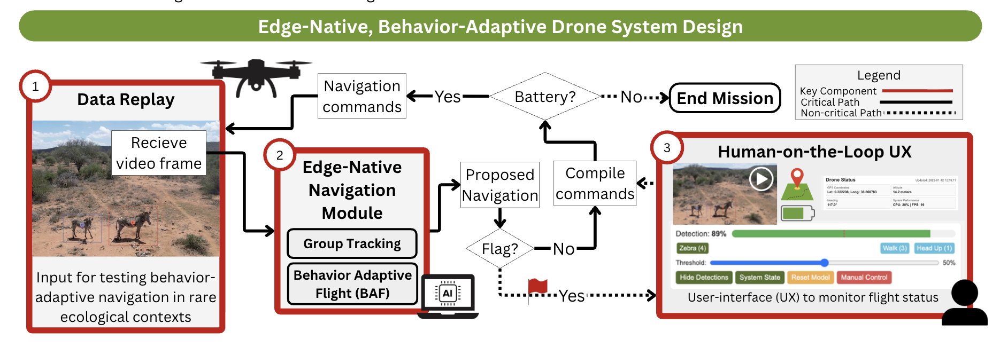
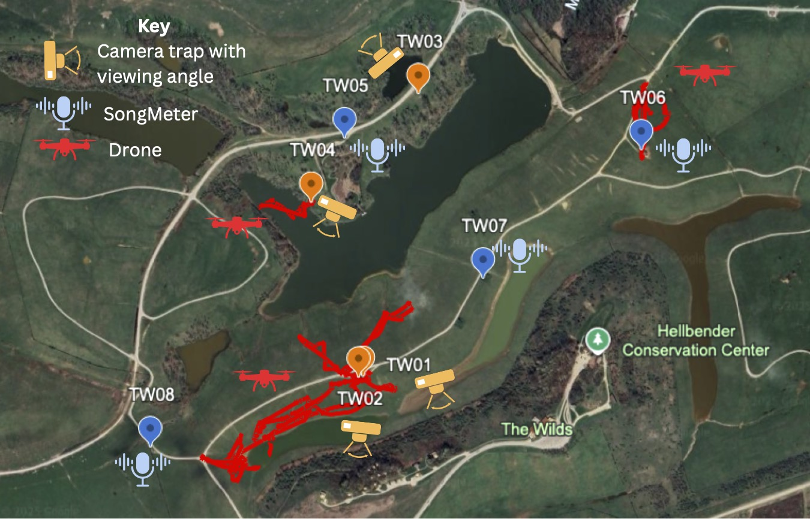
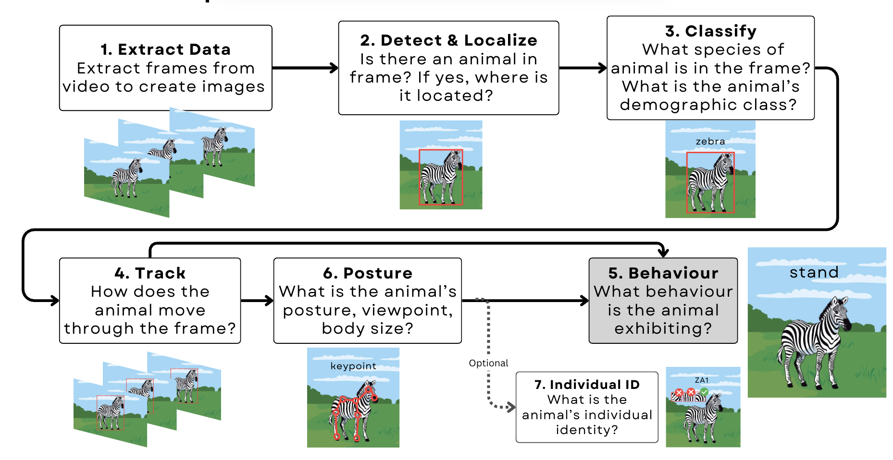
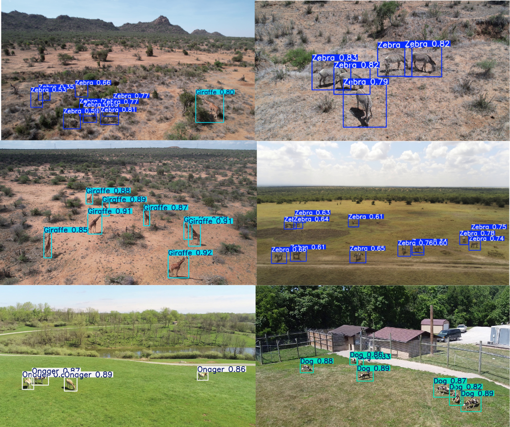
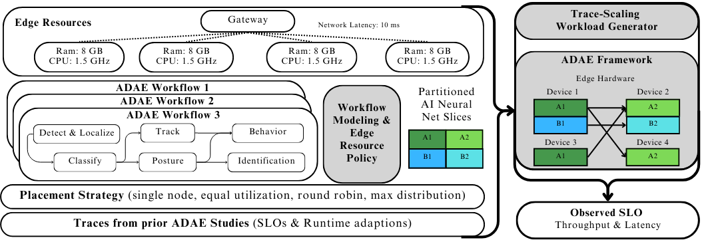
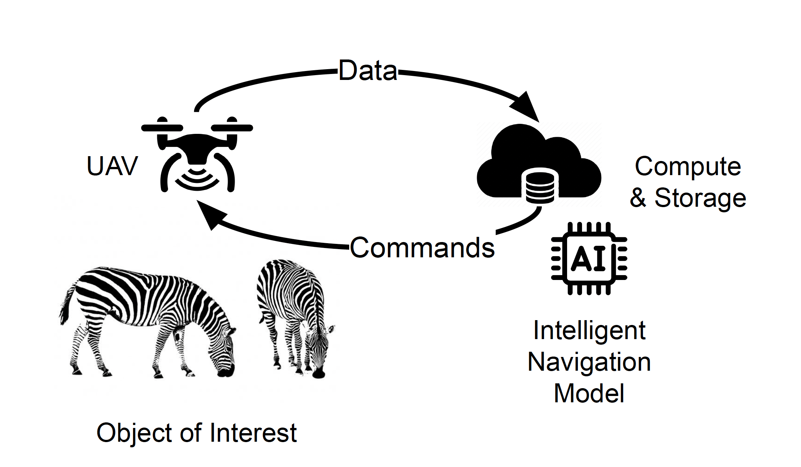

About
I recently earned my PhD in Computer Science and Engineering at The Ohio State University, advised by
Dr. Christopher Stewart and Dr. Tanya Berger-Wolf. I'll be joining MIT as a postdoc, where I'll work on
autonomous drone systems and computer vision for coastal monitoring.
My research develops autonomous, distributed AI-augmented sensing
systems that combine edge computing, computer vision, and robotics.
I focus on enabling real-time, adaptive environmental monitoring by pushing
decision-making to the edge.
This allows systems to autonomously adjust their sensing
strategies to capture dynamic phenomena, such as like animal movements and weather changes,
to augment expert decision-making, without constant human intervention.
My goal is to improve ecological research and
conservation at scale.
Check out my posts on bsky! 🦋
Selected Projects (View All)
FAIR^2 Drones: An AI-Ready Standard for Cross-Domain Wildlife Drone Datasets
kabr-tools: Automated Framework for Multi-Species Behavioral Monitoring
Selected Publications
Please refer to my Google Scholar for up-to-date paper list.

Edge-Native, Behavior-Adaptive Drone System for Wildlife Monitoring
Jenna M. Kline, Rugved Katole, Tanya Berger-Wolf, and Christopher Stewart
ACM/IEEE Symposium on Edge Computing (SEC) 2025
Student Research Competition First Place Award
[Paper]
[Poster]

SmartWilds: Multimodal Wildlife Monitoring Dataset
Jenna M. Kline, Anirudh Potlapally, Bharath Pillai, Tanishka Wani, Vedant Patil,
Penelope Covey, Rugved Katole, Samuel Stevens, Hari Subramoni,
Tanya Berger-Wolf, and Christopher Stewart
Imageomics Workshop @ NeurIPS 2025
[Paper]
[Dataset]

Studying collective animal behaviour with drones and computer vision
Jenna M. Kline, Saadia Afridi; Edouard G. A. Rolland; Guy Maalouf; Lucie Laporte‐Devylder; Christopher Stewart; Margaret Crofoot; Charles V. Stewart; Daniel I. Rubenstein; Tanya Berger‐Wolf
Methods in Ecology and Evolution, 2025
Awarded 2025 Robert May Prize for best paper in the journal by an early career author.
[Paper]
[Video]

MMLA: Multi-Environment, Multi-Species, Low-Altitude Drone Dataset
Jenna M. Kline, Samuel Stevens, Guy Maalouf, Camille Rondeau Saint-Jean, Dat Nguyen Ngoc, Majid Mirmehdi, David Guerin, Tilo Burghardt, Elzbieta Pastucha, Blair Costelloe, Matthew Watson, Thomas Richardson, and Ulrik Pagh Schultz Lundquist
C4Animals Workshop @ CVPR 2025
[Paper]
[Website]
[Code]
[Data]
[Model]

WildWing: An open-source, autonomous and affordable UAS for animal behaviour video monitoring
Jenna M. Kline, Alison Zhong, Kevyn Irizarry, Charles V. Stewart, Christopher Stewart, Daniel I. Rubenstein, and Tanya Berger-Wolf
Methods in Ecology and Evolution, 2025
[Paper]
[Code]
[Data]
[Blog]

Characterizing and Modeling AI-Driven Animal Ecology Studies at the Edge
Jenna M. Kline, Austin O'Quinn, Tanya Berger-Wolf and Christopher Stewart
ACM/IEEE Symposium on Edge Computing - SEC 2024
[Paper]
[Code]
[Slides]
A Framework for Autonomic Computing for In Situ Imageomics
Jenna M. Kline, Christopher Stewart, Tanya Berger-Wolf, Michelle Ramirez,
Samuel Stevens, Reshma Ramesh Babu, Namrata Banerji, Alec Sheets, Sowbaranika Balasubramaniam,
Elizabeth Campolongo, Matthew Thompson, Charles V. Stewart and Maksim Kholiavchenko,
Daniel I. Rubenstein. Nina Van Tiel, and Jackson Miliko
4th IEEE International Conference on Autonomic Computing and Self-Organizing Systems - ACSOS 2023
[Paper]
[Code]

Integrating Biological Data into Autonomous Remote Sensing Systems for In Situ Imageomics: A Case Study for Kenyan Animal Behavior Sensing with Unmanned Aerial Vehicles (UAVs)
Jenna M. Kline, Maksim Kholiavchenko, Otto Brookes, Tanya Berger-Wolf, Charles V. Stewart, and Christopher Stewart
AAAI 2024, Workshop on Imageomics: Discovering Biological Knowledge from Images using AI
[Paper]
[Data]
Invited Talks & Presentations
Autonomous AI-Driven Environmental Sensing Systems
Presentation at MIT Rising Stars in EECS Workshop 2025. Poster available here.How do drones fit into multimodal sensing networks?
Poster presentation at WildDrone Summer School, at the Max Planck Institute for Animal Behavior in Konstanz, Germany. Poster available here.Drones and AI in Field Animal Ecology: Integrating Biology, Animal Science, and Technology.
Invited lecture at the University of Findlay. Watch the recording here.From Ohio to Kenya: Autonomous Drones in Field Ecology and Conservation
Conservation Science Symposium, Muskingum University and The Wilds, OH.Individual Identification of Zebras with Autonomous UAV Swarms
Won first prize for Best Poster Award at the Translational Data Analytics Interdisciplinary Research Fall Forum 2024 in Columbus, OH.Poster presenter at the 2023 Grad Cohort Workshop for Women (CRA-WP) in San Francisco, CA.
PhD Forum Talk: An Adaptive Autonomous Aerial System for Dynamic Field Animal Ecology Studies
Talk at 5th IEEE International Conference on Autonomic Computing and Self-Organizing Systems - ACSOS 2024. [Slides]Autonomous Drones for Collective Wildlife Behavior
Invited lecture for WildDrone Seminar Series (Virtual). [Slides]Intelligent Cyberinfrastructure for Remote Sensing with Autonomous Aerial Robotics: Applications in Animal Ecology and Digital Agriculture
Poster presenter at Translational Data Analytics Interdisciplinary Research Fall Forum 2023 in Columbus, OH.Charting the Future of Harnessing Data Revolution (HDR) Ecosystem: Crafting a Collaborative Research Agenda
Session presenter at the 2023 NSF HDR Ecosystem Conference in Denver, CO.Interdisciplinary Applications of Autonomous Unmanned Aerial Vehicles (AUAVs): A Case Study for Capturing the Behavior of Kenyan Wildlife
Poster presenter at the 2023 STARS Celebration, co-located with Tapia Conference in Dallas, TX.Interdisciplinary Applications for Autonomous Unmanned Aerial Vehicles
Speaker at the Ohio Celebration of Women in Computing 2023 in Huron, OH.PhD Forum Talk: Edge Computing for Software-Defined Cartography
Talk at ACM/IEEE Symposium on Edge Computing (SEC 2022) in Seattle, WA.Teaching
Data Management in the Cloud (CSE 3244)
Teaching Assistant, Autumn 2022Lecture topics include systematic organization of data on cloud computing architectures, basic indexing techniques, including B-tree and hash-based indexing, fundamentals of query optimization, including access path selection and cardinality estimation, full and partial replication and data partitioning and distributed task scheduling.
Modeling and Problem Solving with Spreadsheets and Databases (CSE 2111)
Lab Instructor, Autumn 2021 & Spring 2022Lecture topics include systematic organization of data on cloud computing architectures, basic indexing techniques, including B-tree and hash-based indexing, fundamentals of query optimization, including access path selection and cardinality estimation, full and partial replication and data partitioning and distributed task scheduling.
News
Successfully Defended My PhD Dissertation. May 2026
I successfully defended my PhD dissertation, Autonomous Drone Systems for In Situ Animal Ecology: Towards AI-Driven Multi-Modal Ecosystem Monitoring at the Far Edge, which frames ecological sensing as an adaptive edge systems problem—building autonomous systems that interpret data as it is collected, adapt sensing strategies in real time, and coordinate across modalities to observe complex ecosystems at scale. I'm grateful to my advisors, committee, collaborators, labmates, friends, and family, and excited to be joining MIT as a postdoc next. [Read more]
2025 Robert May Prize. Apr 2026
Recipient of the 2025 Robert May Prize for the paper "Studying collective animal behaviour with drones and computer vision" published in Methods in Ecology and Evolution. [Read more] Methods in Ecology and Evolution awards the Robert May Prize to the best paper in the journal by an early career author.
Organized WILDLABS Edge Computing Group's First In-Person Meeting. Feb 2026
The WILDLABS Edge Computing Group hosts its first in-person meeting ahead of the International Conservation Technology Conference (ICTC) in Lima, Peru. [Read more]
ACM/IEEE SEC 2025 1st Place Student Research Competition Award. Dec 2025
Recipient of ACM/IEEE Symposium on Edge Computing Student Research Competition First Place Award for An Edge-Native Approach to Behavior-Adaptive Navigation in Drone Systems.
2025-2026 Presidential Fellowship Recipient. Dec 2025
Recipient of The Ohio State University Presidential Fellowship for 2025-2026 academic year. The Presidential Fellowship is the most prestigious award given by the Graduate School to recognize the outstanding scholarly accomplishments and potential of graduate students entering the final phase of their dissertation research or terminal degree project.
2025-2026 Alumni Grants for Graduate Research and Scholarship (AGGRS) Awardee. Nov 2025
One of two engineering graduate students awarded The Ohio State University Alumni Grant for Graduate Research and Scholarship (AGGRS). The AGGRS program provides small grants up to $5,000 to support the research and scholarship of doctoral or terminal master’s degree candidates for their dissertations or theses. Featured in Imageomics news here.
Selected for MIT Rising Stars in EECS Workshop. Oct 2025
Invited to the MIT Rising Stars Workshop, a program supporting women pursuing academic careers in EECS, with mentorship, networking, and career development activities.Attended WildDrone Summer School at the Max Planck Institute for Animal Behavior in Konstanz, Germany. Sept 2025
Attended the WildDrone Summer School to explore drone tech for wildlife monitoring. Presented poster: “How do drones fit into multimodal sensing networks?” [Poster] Also joined the AI+Environment Summit at ETH Zurich on AI for sustainability.Summer fieldwork at The Wilds featured by Imageomics Research Institute. Jul 2025
Led team of students conducting fieldwork and collect data at the The Wilds in Cumberland, OH. [Read more].
Selected for WiscProf: Future Faculty in Engineering Workshop, University of Wisconsin–Madison. May 2025
Selected to participate in the WiscProf: Future Faculty in Engineering Workshop, a four-day program for senior PhD students and postdocs interested in academic careers in engineering. Engaged with faculty mentors, peers, and workshops on research, teaching, and career development.
Drone Research Featured in Ohio State News. Apr 2025
Ohio State News featured my research on autonomous drones for animal ecology, highlighting the potential impact of this technology on ecological research and conservation efforts. [Read more]
Graduate Student Research Award. Apr 2025
Research recognized with the Department of Computer Science Graduate Student Research Award, given in recognition of exceptional research contributions.
2025 Edward F. Hayes Advanced Research Forum Engineering Oral Presentation First Place. Feb 2025
Awarded first place for the Engineering Oral Presentation at the 2025 Edward F. Hayes Advanced Research Forum for the presentation "Autonomous, Adaptive Vision-Based Remote Sensing System for Dynamic Field Animal Ecology Studies". [Slides]Fieldwork at Ol Pejeta Conservancy in Kenya with WildDrone. Jan 2025
Travelled to Kenya with the WildDrone team to test autonomous drones for wildlife monitoring at the Ol Pejeta Conservancy.
Successfully Passed PhD Candidacy Exam Nov 2024
Thesis proposal on "Autonomous, Adaptive Vision-Based In-Situ Remote Sensing System for Field Animal Ecology Studies" was approved by the committee, as first Imageomics institute PhD candidate.
Ph.D. Student Jenna Kline's Drone Research Accepted at Top Autonomous Systems Conference. Sep 2024
Collaboration with Dr. Danilo Pianini's research group at the University of Bologna on multi-drone coordination for wildlife video acquisition using the Alchemist Simulator was accepted at ACSOS 2024.A 'Swarm' of Solutions: Drone Research Takes Wildlife Conservation to New Heights. Sep 2024
Collaboration with WildDroneEU on drone swarms for animal monitoring was accepted at IMAV 2024.Summer research project at the Los Alamos National Laboratory (LANL) accepted to SC23. Sep 2023
Summer internship research project with the LANL Supercomputer Institute Summer School, titled "Seeing the trees for the forest: Describing HPC Filesystem Trees with the Grand Unified File-Index (GUFI)", presented at the SC23 Graduate Posters ACM Student Research Competition.Imageomics Embarks on Kenya Research Experience. Jan 2023
Drone pilot conducting field work in Kenya at the Mpala Research Center to collect data for the KABR dataset.CV
My CV is available here. For a full list of my publications, please refer to my Google Scholar.
Contact
kline.377 [at] osu.edu
DBLP |
Orcid |
ResearchGate